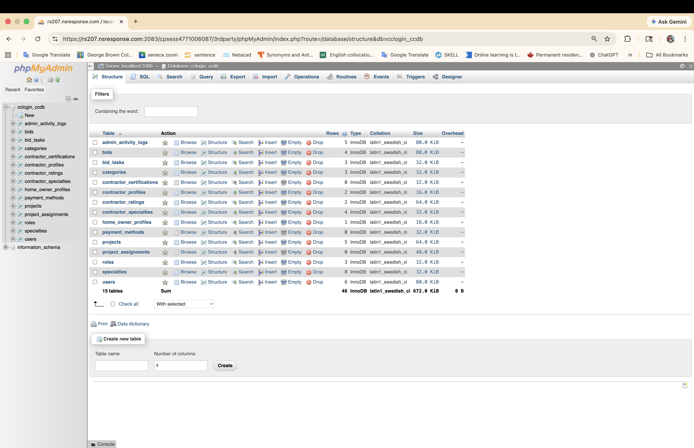
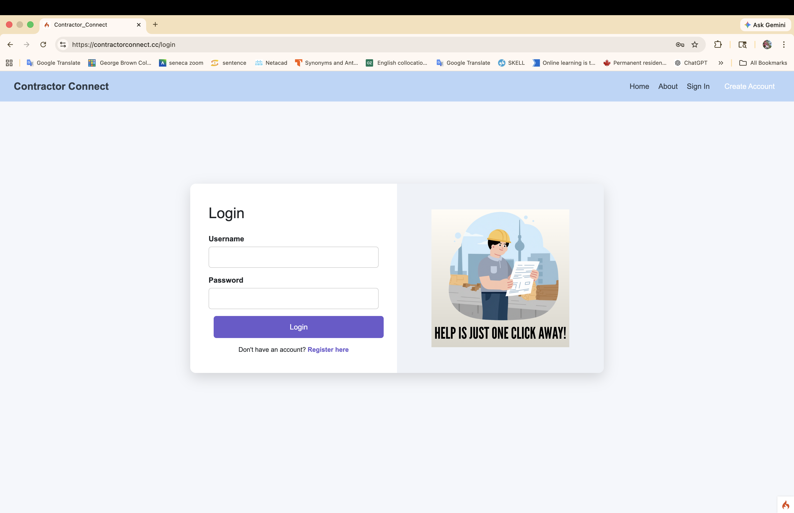
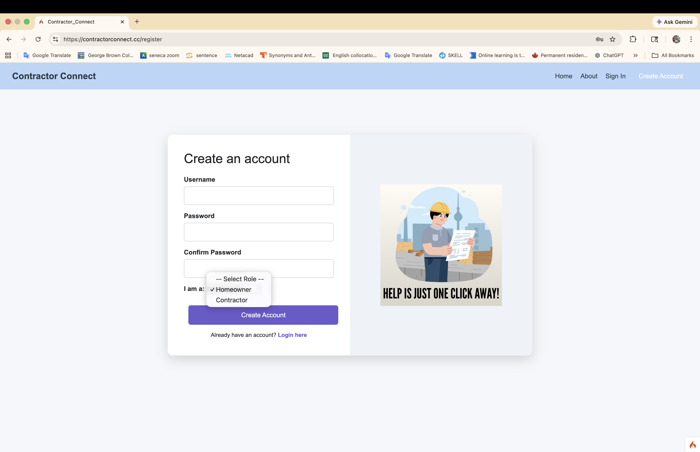
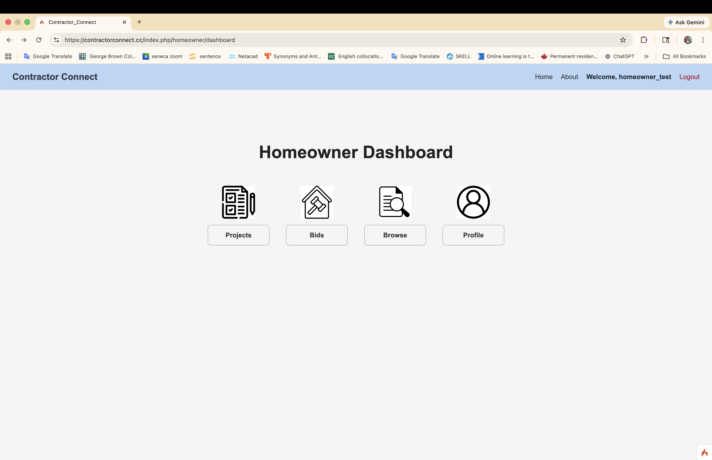
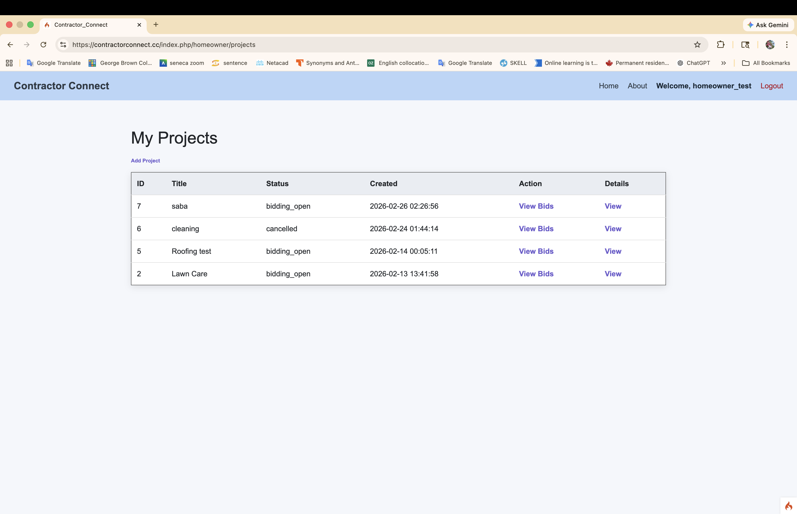

System Implementation
The system implementation phase focused on turning the Contractor Connect design into a working web application. The project was developed as a full-stack website that supports user registration, login, project management, and database-driven interaction between homeowners and contractors.
The application was built using PHP with the CodeIgniter 4 framework, MySQL/MariaDB for database management, HTML, CSS, and JavaScript for the user interface, and cPanel hosting for deployment. The project was also managed through GitHub for version control and collaboration.
As part of the implementation work, I contributed to backend and database-related tasks, including database structure, integration support, and development of core system functionality. This stage of the project moved the platform from planning and mockups into a working live environment.
Technologies Used
- PHP
- CodeIgniter 4
- MySQL / MariaDB
- HTML
- CSS
- JavaScript
- Apache / Linux hosting
- cPanel
- GitHub
Implemented Features
- User registration and login
- Role-based account creation for homeowners and contractors
- Homeowner dashboard navigation
- Project listing and project management views
- Database tables to support users, projects, bids, profiles, and roles
- Live deployment through cPanel hosting
Database Implementation
This screenshot shows the project database in phpMyAdmin, including tables for users, bids, projects, roles, profiles, ratings, certifications, payment methods, and related project data.

Login Page
This screen shows the implemented login page for Contractor Connect, allowing registered users to sign in and access the system.

Register Page
This page shows the account creation feature, including role selection for different types of users in the system.

Homeowner Dashboard
This implemented dashboard provides navigation for core homeowner features such as projects, bids, browsing, and profile access.

Projects Page
This page shows the project listing view where homeowners can manage existing projects, review status, and access project details and bids.
